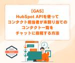

シー・エス・エス イノベーションラボ（ブログ）
https://blog.css-net.co.jp/
シー・エス・エス イノベーションラボ（ブログ）
フィード

【GAS】HubSpot API を使って、コンタクト担当者が未割り当てのコンタクト一覧を、チャットに投稿する方法 1
1
シー・エス・エス イノベーションラボ（ブログ）
熱中症のリスクが高まってくる季節、皆様対策はできていますでしょうか。 野球場でのビールは醍醐味の一つですが、アルコール飲料は水分補給にはなりませんのでお気を付けください！ ドーモ。イノベーションLAB 改め、テクノロジー・コンサルティング課のハヤシです。 今年度から、主に提案や技術検証、時々社内の技術教育を行う人になりました。 社内では「なんかいつも野球場かライヴハウスに行っている人」と思わせておいて、実は技術も大好きです。 こちらでは、私が検証した技術や社内で共有した技術情報などをご紹介していきます。 未処理タスク、忘れがちですよね。チャットを使ってリマインドできたら最高ですよね。 今回は、…
1日前
クラウド化のメリットと導入のポイント ～成功事例を交えて解説～ 2
シー・エス・エス イノベーションラボ（ブログ）
こんにちは。ぎっくり腰の痛みと戦っています、デジタル・マーケティング部のサットンです。先週末くしゃみをしたら、ビキビキ(ﾟДﾟ;)！腰に激痛が走り身動きが取れなくなりました。なんでこんなことに...。 腰の痛みが引いたら整骨院に通って、猫背を直したり、再発防止策に取り組みたいと思います！さて、先日AWSサミットがあったこともあり、今日のテーマはクラウドです。クラウド化は現代のビジネス環境において、効率性と柔軟性を提供するために必要不可欠なものとなっていますよね。本記事では、クラウド化のメリットとデメリット、導入のポイントや成功事例を、わかりやすく解説していきます。 クラウド化とは クラウドサー…
7日前
生成AIを検証してみた件 ~ChatGPTは試験問題を作れるのか~ 2
シー・エス・エス イノベーションラボ（ブログ）
こんにちは。プロダクト・サービス事業部のしゃるたんです。本日も引き続き、生成AIを検証してみたいと思います。 今回は後輩ちゃんがRuby技術者認定試験を受けるので、試験合格に向けて生成AIで問題文を作ってもらおうと思います。ベンダー資格は年々増えてきましたが、受験料はどれも高いので一発合格して欲しいですね。 試験問題の生成を、ChatGPTで検証 問題文の作成 回答の解説文の作成 Excel形式のデータをもらえるのか？ 【まとめ】生成AIで作った問題集を販売したら、著作権はどうなる？ この記事を書いた人 試験問題の生成を、ChatGPTで検証 問題文の作成 さて今回はChatGPTを使いたいと…
12日前

生成AIを検証してみた件 ~Claude3のハルシネーション編~
シー・エス・エス イノベーションラボ（ブログ）
こんにちは。プロダクト・サービス事業部のしゃるたんです。 最近、業務で生成AIを使うようになって驚かされることが多いので、ブログを書いてみました。普段からChatGPTを使っている方であれば、今更感はあるかと思いますが、いろいろな検証をしていきますので、お付き合いいただければと思います。 Claude3（クロード3）のハルシネーションを検証 走れメロスのあらすじを聞いてみた 予想外の結果に企画頓挫 この記事を書いた人 Claude3（クロード3）のハルシネーションを検証 生成AIというとChatGPTを思い浮かべる方が多いかと思いますが、実は世の中にはたくさんの生成AIがあるようです。無料枠で…
21日前
DX 何から始める？【成功への10のポイント】
シー・エス・エス イノベーションラボ（ブログ）
こんにちは。デジタル・マーケティング部のサットンです。先日、ベルサール渋谷ファーストで行われた製造業DXというイベントに参加し、様々な企業のリーダーや専門家の方々から、「DXにおける企業変革」をテーマに色々なお話を聞いてきました！そこで得た、DX成功の基盤づくりのための10のポイントを、私なりにまとめて、ご紹介したいと思います。 DXの必要性 DXとは組織改革 なぜ今、DXなのか? DX成功への10のポイント ポイント１．まずはスモールスタート ポイント２．システム構築の前に業務全体をチャートに書き起こす ポイント３．課題の可視化、評価分析に必要となるデータは測定基準を揃えたうえで実測する ポ…
1ヶ月前
Rubyを使用してStripe Webookを設定する方法
シー・エス・エス イノベーションラボ（ブログ）
こんにちは。イノベーションLABのみなみです。 私はQubeの開発に携わっています。 当社が開発・運営をしているBtoBのWebサービス：Qubeについてはこちら ▼www.css-net.co.jp以前、Qubeで導入した「Stripe」というクレジット決済機能の決済処理について、ブログで書かせていただいたのですが、その後Qubeでは、Stripe決済における支払い状況や入金状況の自動更新機能を新たに追加しました。 その際に、Stripeの「Webhook」という機能を利用しましたので、今回はその設定方法についてご紹介します。 以前のブログについてはこちら▼ blog.css-net.co.…
1ヶ月前
Webhookとは？APIとの違いやメリットなど解説
シー・エス・エス イノベーションラボ（ブログ）
こんにちは！ ES開発部のだいです！今私はアプリ開発の現場で業務をしています。 そこで初めて耳にしたWebhookという単語についてサクッとまとめていこうと思います。 Webhookとは WebhookとAPIの違い Webhookのメリット Webhookのデメリット 身の回りに潜むWebhook この記事を書いた人 Webhookとは Wikipediaを見ると以下のように書かれています。 webhook（ウェブフック）は、web開発でカスタムのコールバックを用いてウェブページやウェブアプリケーションの動作を追加または変更するための方法である。このコールバックは、元のウェブサイトやアプリケ…
2ヶ月前
メールがバウンスされたらどうする？【対応のポイント】
シー・エス・エス イノベーションラボ（ブログ）
おっす オラ悟空！ うそです、悟空じゃないです。 Qube開発担当のMモンです。よろしくお願いします。Qubeは、当社が開発・運営をしているBtoBのWebサービスです ▼ www.css-net.co.jp 今回は、ユーザ様に送信したメールがバウンスされた場合、 Qubeではどのように対処しているかをご紹介したいと思います。 みんな、見てくれよな！ Amazon SESとは バウンスとは ハードバウンス (Hard Bounce) ソフトバウンス (Soft Bounce) バウンス処理について 対応その１．ハードバウンスしたユーザには一斉メールを送らないようにする 対応その２．ソフトバウン…
2ヶ月前
グラフの種類や特徴 まとめ
シー・エス・エス イノベーションラボ（ブログ）
みなさん、こんにちは。入社2年目となりました、イノベーションLABの伊田です。想像していたエンジニアの仕事とは少し異なりますが、グラフの作成をする機会がありました。 グラフの種類も多く、どのグラフを使うのか悩んだり、どのような時に使うグラフなのか不思議に思ったりすることがあったので、10種類ピックアップし、各特徴を簡単にまとめました。 グラフの作成にはBIツールを使用しました。▼関連記事「BIツールとは？導入すると何ができる？」 blog.css-net.co.jp 1. はじめに 2. グラフの役割 3. グラフの種類 3-1. 大小を表す I_棒グラフ II_レーダーチャート 3-2. 構…
2ヶ月前
転職してきた人からみた CSSの特徴
シー・エス・エス イノベーションラボ（ブログ）
はじめに こんにちは。2023年6月1日にCSSに転職しました、山内です。 社会人5年目で、前職では通信インフラや社内業務システムの保守・運用業務に携わっていました。収入面、携わりたい業務、残業時間の有無…などなど、会社を選ぶ際に重視する点は人それぞれかと思います。 皆さんは就活の際、どの点を重視して会社を選ばれていましたか？選ばれていますか？さて、本稿では入社して数か月の私が気づいたCSSの特徴について、記載させていただきます。 なお、私は本社勤務のため、本社で働いていて気づいたこと、感じたものとなることにご留意いただけたらと思います。 はじめに １．立場関係なくフラットな関係性であること …
3ヶ月前
【Django】モデルの紐づけ（ManyToManyField 編）
シー・エス・エス イノベーションラボ（ブログ）
こんにちは、生涯腰痛持ちのゴマ太郎です。 前回の記事を書いた後、初めてのギックリ腰を経験しました。ギックリなんて痛いだけやん、我慢すれば普通に生活できるやんと舐めていた過去の自分はどこかへ消え去りました。 案件が忙しくなってしまい前回の Django モデルの ForeignKey から半年以上も空いてしまいましたが、今回はそのお仲間の ManyToManyField について解説していきます。 1. ManyToManyField とは 1-1. モデルを紐づけるリレーションフィールド 1-2. ManyToManyField は「多対多」の関係を持たせる 2. 前提条件 2-1. 環境 3…
3ヶ月前
電子処方箋から考える 高齢者向けUIデザインのポイント
シー・エス・エス イノベーションラボ（ブログ）
2023年1月から、日本でも電子処方箋が運用開始されました。電子処方箋は、これまで紙で発行されていた処方箋をデジタルデータに移行するものです。 １．電子化のメリット ２．電子化の懸念材料 ３．UI設計時に参考にすべき点 (１) 顔認証付きカードリーダーのUI (２) 優れたUIとは ①テキストやアイコンの大きさ、コントラストが十分であること ②明瞭な表現 ③操作の容易さとサポート機能の組み込み ④ハンデを持つ人への考慮 おわりに １．電子化のメリット これにより、医療機関側は正確な処方・調剤データを参照できるようになります。さらに、他の医療機関とデータが共有できることで重複投薬や併用禁忌（飲み…
4ヶ月前
AWS WAFを使ってIPアドレスを制限する方法
シー・エス・エス イノベーションラボ（ブログ）
はじめまして、N.Nです。 自由研究という名のもと、AWSサービスの中からお題を決め発表する機会がありました。 その際の内容をここで共有させていただければと思います。 １．WAFとは ２．WAFによるIPアドレス制限 2-1. 前提条件 2-2. 期待結果 2-3. 手順 2-4. 結果 ３．最後に ４．参考 今回は AWS Web Application Firewall（以下、WAF）についてご紹介します。 １．WAFとは SQLインジェクションやクロスサイトスクリプティング（XSS）などの攻撃をブロックすることができます。その名の通り、ウェブアプリケーションの保護に特化したファイアウォー…
4ヶ月前
AWSを利用してファイルサーバを構築する方法 - Amazon FSx for Windows File Server -
シー・エス・エス イノベーションラボ（ブログ）
初めまして。デジタル・トランスフォーメーション推進開発部のH・Sと申します。 先日、初の試みとして、社内のAWS事業推進チーム内で自由研究の発表を行いました。 今まで触れたことのない、または気になっているAWSサービスをテーマとして取り上げて検証してみよう、という思いから、自由研究を行うこととなりました。 発表者は、調査内容や検証結果をまとめて、15分～20分の持ち時間で発表しました。新入社員の方々や先輩社員の発表を聞いて、自分には思いつかなかったテーマもあり、とても勉強になりました。 チーム内で、せっかくなら調べたことをブログにまとめてみては？ということになり、今回こちらの記事を書くこととな…
4ヶ月前
AWS ECS(Elastic Container System)でコンテナを起動する方法
シー・エス・エス イノベーションラボ（ブログ）
こんにちは。8月からデジタル・トランスフォーメーション推進開発部に配属されたT. Tです。 AWSサービスの理解を深めるために、使ったことのないサービスについて自由研究として調査・構築を行いました。そこでECSをテーマに挙げて調査したものを記事にしていきたいと思います。 ECS(Elastic Container System)とは？ コンテナ環境のメリット 今回行ったコンテナシステムの構成 構築手順~環境編~ Dockerイメージの準備 Dockerイメージの作成 ECR(Elastic Container Registory)にプッシュ ネットワークの構築 事前準備 ゲートウェイエンドポイ…
4ヶ月前
PySimpleGUIで画面作成
シー・エス・エス イノベーションラボ（ブログ）
みなさん、こんにちは。入社1年目のsiです。私はイノベーションLABという部署に配属され、Pythonの研修を受けました。その後、画面を備えた簡易的なツールの開発が必要となったため、学んだPythonを使って作成しようとPySimpleGUIに挑戦しました。本記事では、その際に調べた基本的な画面の作成方法について書いていきます。 1. PySimpleGUIとは 2. 前提条件 3. 画面作成 3-1. 基本の流れ 3-2. レイアウトの作成 3-3. ウインドウの作成 3-4. イベントループの作成 3-5. ウィンドウを閉じる 4. 最後に 5. 参考 1. PySimpleGUIとはPy…
6ヶ月前
新NISA ～システム開発の裏側のお話～
シー・エス・エス イノベーションラボ（ブログ）
こんにちは。ファイナンシャル・ソリューション開発部のY.Tです。 私は、SEとして証券のバック業務のシステム開発に携わっております。日々、様々な開発を行っていますが、実際にどのような流れで開発を行っているか、2024年1月（もう間もなくです）から導入される、新しいNISAの対応を例に、”ふわっ”と説明いたします。 １．NISAとは ２．新NISAとは ３．新NISAの対応の概要 ４．本番実施までの流れ ①調査 ②外部設計 ③内部設計 ④開発 ⑤結合テスト ⑥接続テスト ⑦実施準備 ⑧本番実施 ５．最後に １．NISAとは まず従来のNISAの説明をします。 株などの取引で利益が出た際、通常その…
7ヶ月前
銀行業務とシステム開発の関連について
シー・エス・エス イノベーションラボ（ブログ）
こんにちは。ファイナンシャルソリューション開発部 信岡です。 気が付くと今年もあと1か月を残すところとなりました。11月が終わると、本当にあっという間に年末を迎えてしまいます。そんなタイミングで、改めて今年1年を振り返ってみたのですが、私自身にも関係して世の中でも大きな話題となったニュースに10月に発生した全銀ネットのシステム障害をがあります。私自身は特に生活には支障がなかったですが、趣味でやっているサックス仲間の1人はお金が振り込まれずに結構大変だったと言ってました。皆さんの中にも「給与が振り込まれない」「支払いが出来ない」などの影響を受けた方もいると思います。 システムには多種多様な物が存…
7ヶ月前
ツールのスリム化案件
シー・エス・エス イノベーションラボ（ブログ）
どうもこんにちは、証券システム開発二課に所属しているものです。 現在は証券会社でシステム関連の取りまとめ部署で働いています。主な仕事内容はユーザからのシステム化依頼を受けて様々なベンダーとの橋渡しを行っています。今の部署に着任し３年目ですが、周りは１０年選手ばかりなのでまだまだ若輩です。 趣味としては自転車が大好きで、週末にはサイクリングを楽しんでいます。また、家族との時間も大切にし、日常生活を充実させるよう心がけています。仕事とプライベートのバランスを取りつつ、新しいチャレンジにも積極的に取り組んでいます。 自己紹介はこのくらいにしておいて、今回は初めて自分主導で行った、ツールのスリム化案件…
8ヶ月前
資格取得から自身の成長と信頼獲得への道
シー・エス・エス イノベーションラボ（ブログ）
こんにちは！保険システム開発課に所属しているzffeforblogです。 数年前から健康診断で生活改善を指摘されることが増えてきた今日この頃。子供も少し大きくなりディズニーに興味を持ち始め、ディズニーランドに行く機会が増えてきました。 そういった家族とのイベント参加翌日以降、生活に支障をきたすレベルの疲労感が残り自分の体に対する危機感が。少しでも対処するために重量ウォーキングシューズをはいてめざせ1日1万歩生活をはじめています。なにをするにも体が資本。 みなさんも何か始めてみてはいかがでしょうか？ さて、今回は資格を取得して感じたことを纏めてみましたので、最後までお付き合いをお願いいたします。…
8ヶ月前
スケジュール管理に大切なこと
シー・エス・エス イノベーションラボ（ブログ）
こんにちは、KFともうします。 段々と涼しくなってまいりましたが、いかがお過ごしでしょうか？コロナに引き続きインフルエンザも流行してきているようですので、手洗いうがいなどを心掛け体調管理には気を付けたいところです。 はじめに ケース１（DB移行案件） ケース２（ECサイト開発） まとめ はじめに 今回話をさせていただくのはスケジュール管理についてです。プロジェクトを無理なく円滑に進めるために重要になるのがスケジュール管理です。自分が体験した話を元に、スケジュール管理をするうえで気を付けるべき点について話をさせて頂きたいと思います。 ケース１（DB移行案件） 一つ目のケースは私が担当したDB移行…
9ヶ月前
WSL2でディストリビューションの名前やファイルの場所を変更する方法
シー・エス・エス イノベーションラボ（ブログ）
みなさん、こんにちは。イノベーションLABのハヤシです。 オフィスに出社する際にお土産を持ってくると「野球観に行ってきたんですか？」と聞かれます。 だいたい合ってます。聞かれたいのでお土産を買っているところがあります。 夏の甲子園が終わっても、秋の大学野球に、神宮大会。まだまだ楽しみは尽きません。 さて、今回は開発環境構築についてのお話です。 以前、 GitBash での環境構築についての記事を書きました。 blog.css-net.co.jp最近は、WSL(Windows Subsystem for Linux) 2 が安定してきたのもあってすっかり WSL2 がメイン開発環境になっています…
9ヶ月前
銀行APIの基礎知識！使用するときの注意点とは？
シー・エス・エス イノベーションラボ（ブログ）
こんにちは。KYです。現在は会計システムの開発に携わっています。 銀行法の改正で金融機関の許可のないスクレイピングが禁止されて数年が経ちました。 APIの利用も一般的になっており今更解説することもあまりないような気はしますが、ちょっと概要などを書いてみようと思います。 業務で担当した範囲でのまとめになりますので至らない部分もあるかと思いますが、初心者用の超概要くらいの感覚で見て頂けると幸いです。 APIとは 照会系API 振込系API 認証系API APIを使う際に気を付けること APIとは APIは「アプリケーション・プログラミング・インターフェース」の略で、銀行等が外部にデータを連携するた…
10ヶ月前
【Qube】イベントの申込手順
シー・エス・エス イノベーションラボ（ブログ）
本記事では、ユーザ登録後のイベント申込の手順について解説します。 新規登録手順については、こちらをご確認ください。 ２人目以降の登録手順については、こちらをご確認ください。 0.まずはじめに、以下のQubeのサービスページを開いてください。 1.画面右上の「ログイン」をクリックします。 2.登録したメールアドレス、パスワードを入力の上、「ログイン」をクリックします。 3.画面左側の「イベント」をクリックします。 4.参加したいイベントのサムネイル画像をクリックします。 5.イベントページの「予約する」をクリックします。 6.イベントの内容の確認、必要情報を入力します。 7.注意事項、キャンセル…
10ヶ月前
【Qube】ユーザ登録の手順：企業ID発行済の企業様の場合
シー・エス・エス イノベーションラボ（ブログ）
本記事では、既に企業情報を登録されている企業様の追加ユーザの登録手順について解説します。 新規登録手順については、こちらをご確認ください。 イベント申込の手順については、こちらをご確認ください。 0.まずはじめに、以下のQubeのサービスページを開いてください。 1.登録済み代表ユーザ様の操作：企業ID、キーコードの確認方法は以下の通りです。 2.新規ユーザ様の操作：画面右上の「新規登録」をクリックします。 3.「企業IDに紐づくメンバーを追加登録する方はこちら」をクリックします。 4.必要情報を入力し、「登録」をクリックします。 5.利用規約を御一読ください。 6.利用規約を確認後、「利用規…
10ヶ月前
【Qube】ユーザ登録の手順：初めて登録する企業様の場合
シー・エス・エス イノベーションラボ（ブログ）
本記事では、初めてQubeに登録する企業様のユーザ登録手順について解説します。 ２人目以降の登録手順については、こちらをご確認ください。 イベント申込の手順については、こちらをご確認ください。 0.まずはじめに、以下のQubeのサービスページを開いてください。 qube-q.com 1.画面右上の「新規登録」をクリックします。 2.「企業IDを発行していない方はこちら」をクリックします。 3.必要情報を入力し、「登録」をクリックします。 4.利用規約を御一読ください。 5.利用規約を確認後、「利用規約に同意する」をチェックし「OK」をクリックし、登録を行います。 6.認証メールが届くので、リン…
10ヶ月前
投資信託に関するインボイス制度
シー・エス・エス イノベーションラボ（ブログ）
皆さん、はじめまして。資産運用システム開発課のXです。投資信託に関するシステム開発に関わっています。 今回は巷で噂になっている「インボイス制度」において、投信業務ではどのような対応を行っているのかについて説明したいと思います。 １．インボイス制度の概要 インボイス（適格請求書） インボイス制度 消費税とは ２．投信業務から見たインボイス制度の対応について ３．インボイス制度の投信業務におけるシステム対応範囲 対象となるもの 信託報酬 委託者報酬 代行手数料 受託者報酬 対象外となるもの システム対応について 代行手数料 委託者報酬 受託者報酬 運用会社のシステム対応内容 仕入明細書 適格請求書…
10ヶ月前
システム更改における要件定義の重要性について
シー・エス・エス イノベーションラボ（ブログ）
こんにちは。ファイナンシャルソリューション開発部 肥後です。 私は今銀行系のシステム開発のPM補佐を行っているのですが、今回は昨年まで対応を行っておりましたシステム更改対応で、要件定義の重要性について改めて痛感した部分がありましたので、その点について、ご紹介させていただきたいと思います。 １．更改を行ったシステムの業務内容 ２．本番稼働前に不具合が発生 ３．今回のシステム更改を踏まえたうえで感じた点 ４．最後に １．更改を行ったシステムの業務内容 私が担当していた更改のシステムについてまずご説明させていただくと、手形交換システムというシステムの更改を行っておりました。 行っている業務としては、…
1年前
Tableau Desktop Specialist取得への道
シー・エス・エス イノベーションラボ（ブログ）
皆さん、こんにちは。 お久しぶりです！skybluefantasistaです。 梅雨時の大雨が降ったと思ったら急激な温度の上がり方に身体がついていくことができず、暑さにバテている私ですが、皆さんはいかがお過ごしでしょうか。 もう少し緩やかに気温調整して欲しいと思うのは私だけでしょうかね。 さて、皆さん覚えていらっしゃいますか？ blog.css-net.co.jp 以前、このようにブログに綴っていた私ですが、この度「Tableau Desktop Specialist」を取得いたしました！ 資格取得頑張るぞ！と意気込んでいた当時、資格勉強と業務を並行していくことが苦しくなり、何度か挫けそうにな…
1年前
Ruby on RailsでのStripe実装 後編 - 決済処理
シー・エス・エス イノベーションラボ（ブログ）
こんにちは、イノベーションLABのM.Mです。 今回はQubeで導入したクレジット決済機能のStripeについて記事にしていきたいと思います。 後編では、Stripeを使用したクレジットカードと銀行振込での決済処理について解説します。 前編 - アカウント作成 はこちらです⇩ blog.css-net.co.jp StripeConnectついて StripeConnectとは Connectアカウントについて Stripeを利用するための設定 子アカウント（売り手）の登録方法 顧客（買い手）のカード情報登録 親アカウントへの登録 子アカウントへの複製 決済処理 クレジットカード 銀行振込 決…
1年前